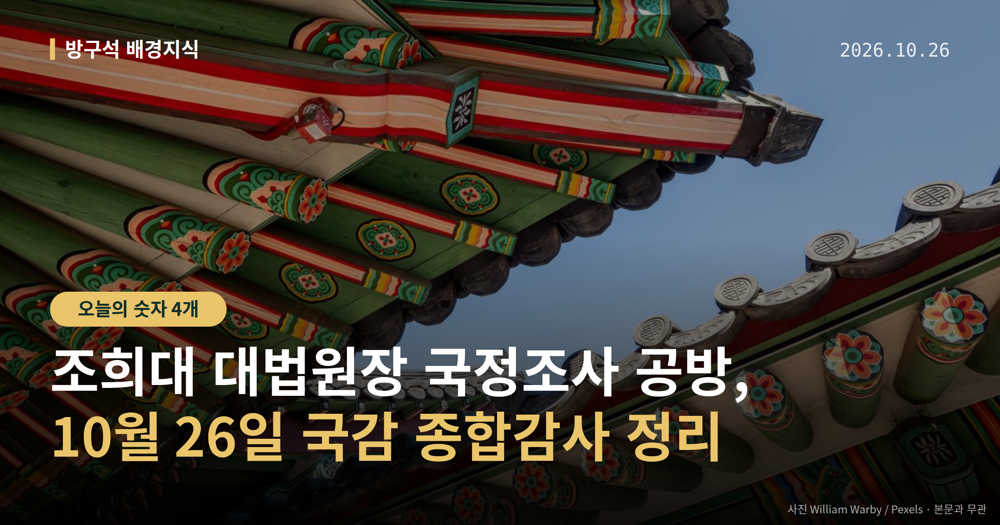
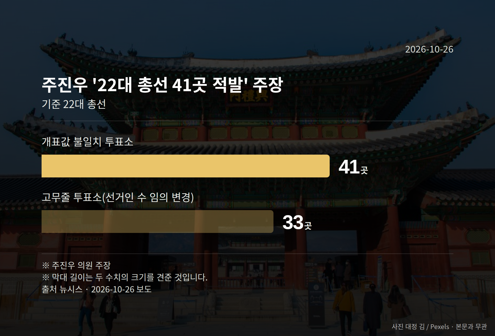
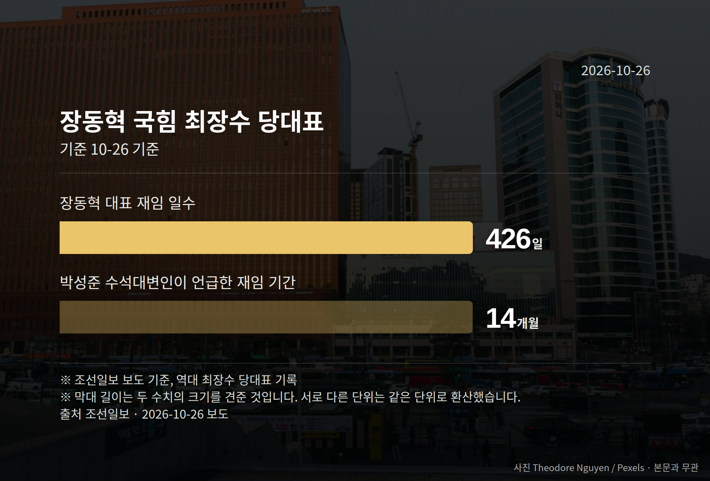

이 글은 2026년 10월 26일 기준으로 정리한 내용입니다.
26일 국회에서 4개 상임위원회 종합감사가 열립니다. 여야가 가장 세게 부딪힐 곳으로 꼽히는 곳은 법제사법위원회이고, 쟁점은 조희대 대법원장 국정조사입니다.
다만 국정조사도, 탄핵소추도 아직 착수가 결정된 단계는 아닙니다. 오늘은 이 사안을 사실과 주장으로 나눠 보겠습니다.
26일에는 국방위, 기후에너지환경노동위, 법제사법위, 행정안전위 등 4개 상임위에서 종합감사가 진행된다고 뉴시스가 보도했습니다.
법사위에서는 대법관 후보 재제청 요구 거부 등 조희대 대법원장을 둘러싼 논란을 두고 여야가 다시 충돌할 것으로 전망됐습니다. 앞서 10월 6일 대법원 국정감사에서도 여당 간사 김의겸 더불어민주당 의원과 야당 간사 박형수 국민의힘 의원이 언쟁을 벌였습니다.
여기서 두 용어를 짧게 풀어 둡니다. 국정조사는 국회가 특정 사안을 정해 자료를 받고 조사하는 절차이고, 탄핵소추는 국회가 공직자 파면을 헌법재판소에 청구하는 절차입니다.
국민의힘 정점식 원내대표는 25일 기자회견에서 민주당의 국정조사 추진을 "탄핵에 대한 국민적 반발이 두려우니 국정조사라는 탄핵 간 보기 꼼수를 쓰겠다는 것"이라고 말했습니다.
그는 "탄핵 국정조사가 탄핵소추 자체보다 더 악질적"이라며 "차라리 깔끔히 탄핵소추하고 빨리 헌법재판소에서 기각을 받는 게 나라를 위한 길"이라고 말했습니다. 또 민주당의 국정조사 목적을 이재명 대통령 파기환송 판결과 오세훈 서울시장 2심 무죄 선고에 대한 "분풀이성 보복"이라고 주장했습니다.
이는 정점식 원내대표의 주장이며, 이에 대한 더불어민주당 측 반론은 오늘 자료에서 확인되지 않았습니다. 정 원내대표는 정동영 통일부 장관과 이종석 국가정보원장 경질도 재차 요구했는데, 이 역시 주장 단계입니다.
국민의힘 주진우 의원은 25일 기자회견에서 22대 총선 개표상황표와 입력값이 다른 투표소를 적발했다고 주장했습니다.

| 항목 | 주진우 의원 주장 |
|---|---|
| 개표값 불일치 투표소 | 41곳 |
| 후보·정당 임의 입력 투표소 | 8곳(서울 6·경기 1·인천 1) |
| 선거인 수 불일치 규모 | 1만4214명 |
| 선거인 수 임의 변경 투표소 | 33곳 |
주진우 의원은 "윗선의 지시·개입이 있었거나 조직적인 부정"이라고 주장하고, 선관위 특검이 출범 50일이 지났는데 구속 수사가 한 건도 없다며 엄단을 촉구했습니다. 선거관리위원회와 특검 측 해명은 자료에 담기지 않았고, 이 내용은 수사나 판결로 확정된 사실이 아닙니다.

국회의원 발의 법률안 122건. 가장 최근은 국민건강보험법 일부개정법률안(박용갑의원 등 14인).
본회의 처리 법률안 2건 — 철회 2건
이번 주 등록된 선거 여론조사 12건
오늘 이슈에 나온 법안은 지금 어디에
열린국회정보·중앙선거여론조사심의위원회 자료를 직접 셌습니다. 여론조사의 자세한 사항은 중앙선거여론조사심의위원회 홈페이지를 참조하세요.
여러분은 국회가 어떤 사안을 다룰 때 '조사'와 '표결' 중 무엇이 먼저라고 느끼시나요?
댓글로 알려 주시면 다음 글에 반영하겠습니다.